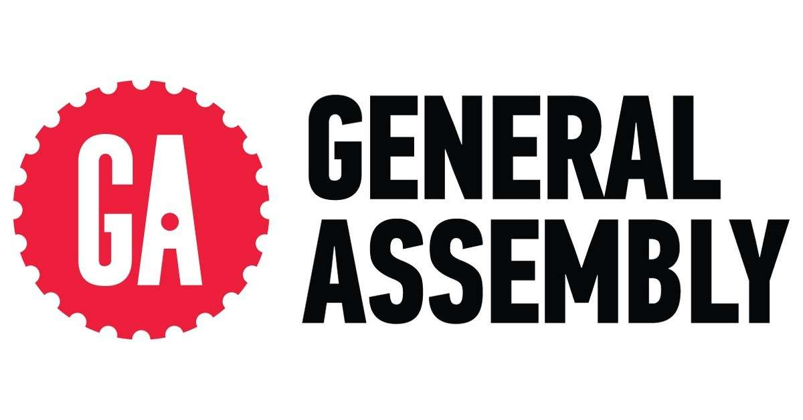
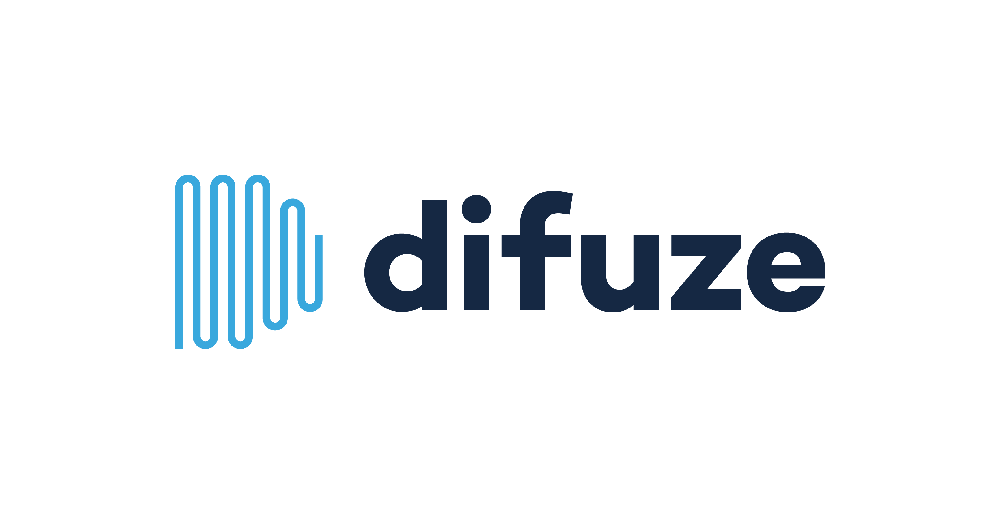
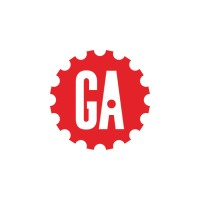

Hamilton, Ontario
Robert Koszegi
Business Application Specialist · FileMaker & Full-Stack Developer
I design and build FileMaker-based business solutions and connect them to the platforms around them. I particularly enjoy the going-live moment — when scripts run, systems start talking, and a digital creation comes to life.
- Claris FileMaker Pro Expert
- FileMaker Server Administrator
- ITIL® v5 Foundation
About
Developer with a media background
I'm a certified FileMaker developer with a range of skills in full-stack development and digital media. Before focusing on software, I spent years in broadcast and post-production — work that taught me to care about quality control, reliable data handling, and tools that make people's day-to-day jobs easier.
Today I work as an in-house developer, which means understanding how the business actually operates and building tools alongside the colleagues who rely on them. I'm also the author of FM Win Tools, an AutoHotkey-based utility for FileMaker listed on FileMakerStandards.org.
Databases
IT & Infrastructure
Experience
Work history
-
2023 — Present
Business Application Specialist
Ecclesiastical Insurance
Design and development of FileMaker-based business solutions and integration with third-party platforms.
-
2021 — 2023
Programmer-Analyst
GTI
Maintained custom solutions: troubleshooting bugs, developing new features to specification, and installing and configuring FileMaker Pro and FileMaker Server.
-
2021

Software Engineering Immersive Education
General Assembly
Graduated an intensive boot camp focused on full-stack application development.
-
2019 — 2021

Developer
Difuze
Designed, built and maintained applications and databases, and managed servers on the FileMaker platform.
-
2015 — 2019
Developer / Video Technician
The Media Concierge
Developed the company's custom FileMaker CRM, handling daily operations from estimates and work orders to asset tracking.
Responsible for video quality control and the timely, secure transfer of digital assets, and built data-entry and file-management tools for data I/O operations.
-
2012 — 2015
Quality Control Operator
Deluxe
Performed technical analysis and evaluation of file- and tape-based assets for clients including eOne, Cineflix and FilmNation.
-
2006 — 2009
Technical Operator
Woodbine Entertainment
Worked on a broadcast team in graphics, as a VTR operator and as an audio technician.
Credentials
Licenses & certifications
ITIL® v5 Foundation
PeopleCert
Credential ID GR428015632RK
Claris Certified FileMaker Developer
Claris, an Apple company
Credential ID 434246626

Contact
Let's talk
Questions about a FileMaker project, integration, or anything else — I'm happy to hear from you.